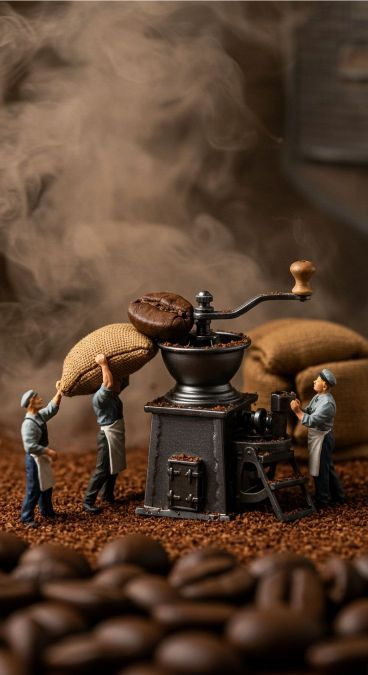

The Art of In-House Roasting

There is a moment — about twelve minutes into a roast — when the first crack sounds. The bean, swelling with steam and pressure, finally lets go. It is a sound that every passionate roaster comes to know deeply, the signal that something raw and green has crossed into territory where flavour truly begins to emerge. At Mazagran, we live for that moment.
We made the decision to roast our own coffee on-site because we believed, fundamentally, that the freshest possible bean is the only way to deliver an honest cup. Most cafes receive pre-roasted coffee from external suppliers, packaged days or even weeks before it reaches the grinder. By the time it is brewed, the volatile aromatic compounds that give great coffee its complexity have already begun to dissipate. We wanted none of that.
From Green Bean to Golden Cup
Our process begins long before any heat is applied. We source raw green beans from carefully vetted importers who work directly with farms across Ethiopia, Colombia, Guatemala, and Sumatra. We look for beans grown at altitude, with the kind of density that holds flavour through the roasting process. When the sacks arrive at Moray Place, we cup each new lot — tasting them as light roasts first — to understand the potential in every batch.
The roast profile itself is built slowly over multiple trial batches. We adjust inlet temperature, drum speed, and airflow to coax each variety toward its best expression. A washed Ethiopian might want a fast, lighter roast to preserve its floral, citrus-bright character. A natural-processed Sumatran needs time — a slower, more developed roast to bring out its earthy depth and dark chocolate finish.
Why It Matters for You
Coffee is at its peak flavour window between four and twenty-one days off roast. By roasting in-house, we can guarantee your cup falls squarely within that window, every single day. The result is a clarity of flavour that pre-packaged coffee simply cannot match — crema that is dense and rust-coloured, aromatics that lift off the cup before you even take a sip, and a finish that lingers long after the last drop.
Next time you are in, ask your barista what is on the grinder that day. We love talking about it.
Fresh Slices & Tarts — Why the Cabinet Matters

A great espresso bar is not defined by coffee alone. The moment a customer walks through the door and spots the cabinet — its shelves lined with glossy tarts, dense chocolate slices, and soft afternoon cakes — they understand what kind of place this is. One that cares about every part of the experience.
Our pastry selection rotates daily, guided by what is seasonal, what pairs best with our current roast profile, and frankly, what our team is most excited about baking. We believe the cabinet should feel alive — not static. A customer who visits on Monday and again on Thursday should find something new to discover each time.
The Perfect Pairing Philosophy
We think carefully about how food interacts with coffee. A bitter, dark roast calls for the sweetness of a caramel slice or a passionfruit tart to create balance. A bright, acidic Ethiopian single origin finds a beautiful counterpart in something buttery and neutral — a shortbread or a plain almond cake — that lets the fruit notes in the coffee do the talking.
Our moist chocolate fudge cake is perennially the most-ordered item alongside a flat white, and with good reason. The fat in the ganache coats the palate in a way that makes the milk sweetness in the coffee more pronounced. It is a combination that borders on scientific.
Made Fresh, Daily
Nothing in our cabinet is more than a day old. We take pride in that. When the trays empty, they empty — and the next morning, fresh product takes its place. If you have a favourite, we always recommend coming in before noon. The early bird, as they say, gets the last custard tart.
From Goats in Ethiopia to Flat Whites in Dunedin — The Remarkable History of Coffee
The story most often told about coffee's discovery begins in the Ethiopian highlands, sometime around the ninth century. A goat herder named Kaldi, so the legend goes, noticed his animals behaving with unusual energy after eating red berries from a particular shrub. He brought the berries to a local monastery, where monks brewed them into a drink and found that it helped them stay awake through long evening prayers. Whether entirely true or not, the story captures something essential: coffee's first role was not as a luxury, but as an aid to wakefulness and spiritual practice.
Arabia and the Birthplace of the Cafe
By the fifteenth century, coffee had reached the Arabian Peninsula, where it was cultivated seriously for the first time in Yemen. The port city of Mocha — a name coffee drinkers still use today — became the world's first great coffee trading hub. Across the Arab world, establishments called qahveh khaneh emerged as places where people gathered to drink coffee, play chess, share news, and engage in public debate. These were the world's first cafes, and they became so influential in community life that they were nicknamed "schools of the wise."
Europe's Coffee Revolution
Coffee arrived in Europe in the seventeenth century, and its reception was immediate and transformative. The beverage swept through cities as an alternative to the weak, often contaminated water and the ale that most people drank throughout the day. In London alone, over two thousand coffee houses were operating by 1700. Lloyd's of London — still one of the world's most famous insurance markets — began as a coffee house where merchants and sailors gathered. Edward Lloyd served coffee and kept records of ships and their voyages.
Coffee quite literally changed how people thought, by replacing an intoxicant with a stimulant and shifting the default state of urban society toward sobriety and focused productivity. The Enlightenment, many historians argue, was brewed in coffee houses.
Espresso and the Modern Cafe
The espresso machine arrived in early twentieth-century Italy, and with it came an entirely new culture of coffee consumption — fast, concentrated, social, and standing at the bar. The flat white, that quintessentially antipodean invention (debated hotly between Australia and New Zealand), emerged in the 1980s as a smaller, stronger, microfoam-rich alternative to the latte. New Zealand's coffee culture today is among the most sophisticated in the world, a heritage we honour every single day here at 36 Moray Place.
What Makes a Great Cafe? — The Culture Behind the Counter
A great cafe is, at its core, a great place. This sounds obvious but it is worth saying plainly: the coffee is important, yes — but the sum total of the experience is what brings people back. The regulars who come in every morning are not just buying caffeine. They are buying a ritual, a few minutes of warmth and familiarity before the day begins in earnest.
This is something we think about deeply at Mazagran. When we designed the space at 36 Moray Place, we thought about how light falls in the morning and how the atmosphere should shift through the day. A good cafe feels different at 7:30am than it does at 2pm — more urgent, more purposeful in the early hours, and then slower, more contemplative as the afternoon stretches out.
The Barista as Host
The barista at the machine is not simply an operator of equipment. They are the host of the experience. The best baristas we have worked with share certain qualities: curiosity about the product, genuine warmth with customers, the ability to be consistent under pressure, and a kind of artistic pride in the work that shows in every cup they send across the counter.
We invest in training not because we want identical robots behind the bar but because we want confident, knowledgeable people who can have real conversations about coffee — about why the single origin tastes the way it does today, about what milk temperature does to sweetness perception, about why your flat white might taste slightly different on a humid morning. Those conversations are what transform a transaction into a relationship.
Community as the Menu
The cafe has always been a community institution. The original qahveh khaneh in Cairo and Istanbul were places where ideas were exchanged as freely as the coffee. We see our role in Dunedin the same way — as a place that belongs to the neighbourhood, where regulars become familiar faces, where conversations happen between strangers who share nothing but a love of a well-made cup. That is something no algorithm can replicate, and something we guard fiercely.
A Journey into Single Origin Coffee — Terroir, Traceability, and Taste
Wine lovers have long understood that the same grape variety, grown ten kilometres apart on different soil, will produce wines that taste nothing alike. Coffee is governed by the same principle. The elevation, rainfall, soil composition, and harvesting practices at a single farm will shape the flavour of the bean as profoundly as any decision made during roasting or brewing. This is what coffee professionals mean by terroir, a French wine term that the specialty coffee world has adopted with good reason.
What "Single Origin" Actually Means
The term single origin can mean different things depending on how it is used. At its broadest, it simply means coffee from one country — Ethiopian, Colombian, Guatemalan. More precise definitions narrow it to a single region, a single cooperative, or even a single farm or micro-lot. The more specific the origin, the more traceable and distinctive the flavour — and the more the farmer's work is recognised and valued.
At Mazagran, we rotate our single-origin offerings based on what is arriving fresh and what is most interesting. We try to offer a variety of origins so customers can, over time, develop a genuine understanding of how geography shapes flavour.
Flavour Profiles to Watch For
- Ethiopia (Washed): Floral jasmine notes, bergamot, stone fruit — bright and tea-like.
- Ethiopia (Natural): Blueberry, dark cherry, wine — lush and fruit-forward.
- Colombia (Huila): Caramel, red apple, milk chocolate — balanced and approachable.
- Guatemala (Antigua): Brown sugar, almond, cocoa — structured and classic.
- Sumatra (Mandheling): Dark earth, cedar, dark chocolate — bold and full-bodied.
How to Best Experience Them
We serve our single origins as espresso or as a long black to let the origin character shine without the softening influence of milk. If you are curious but unsure, ask a barista. We are always happy to pull a shot and talk you through what you are tasting — the acidity, the body, the sweetness, the finish. Understanding single origin coffee is not about pretension. It is about paying attention to something remarkable that has travelled a long way to reach your cup.
Recent Posts